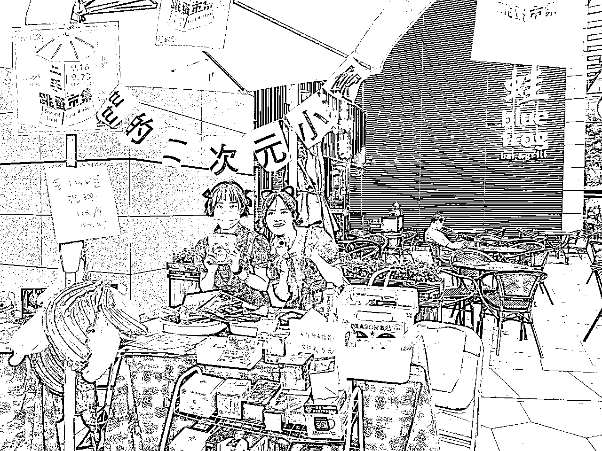
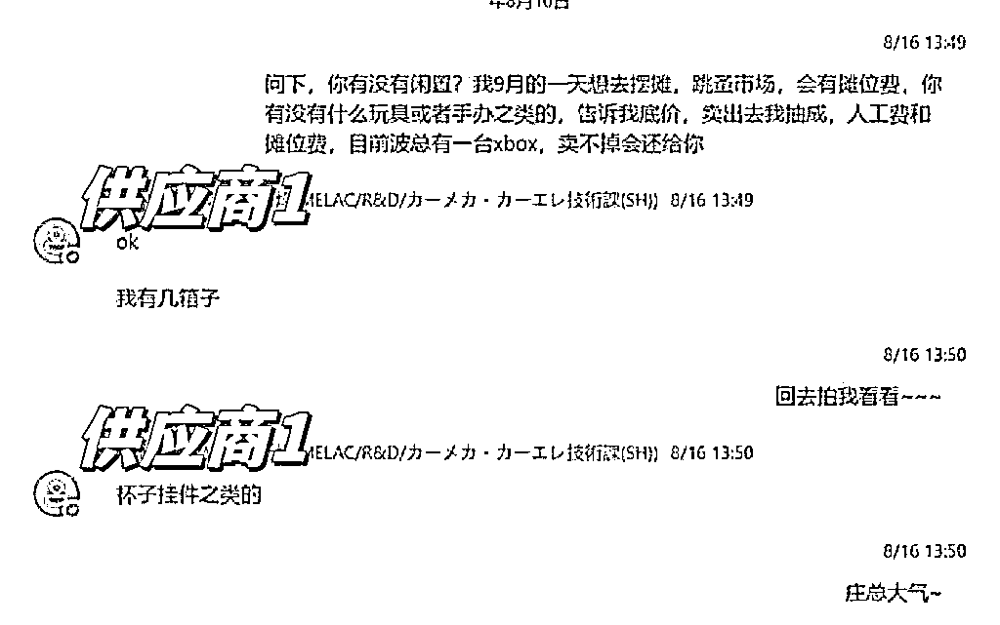
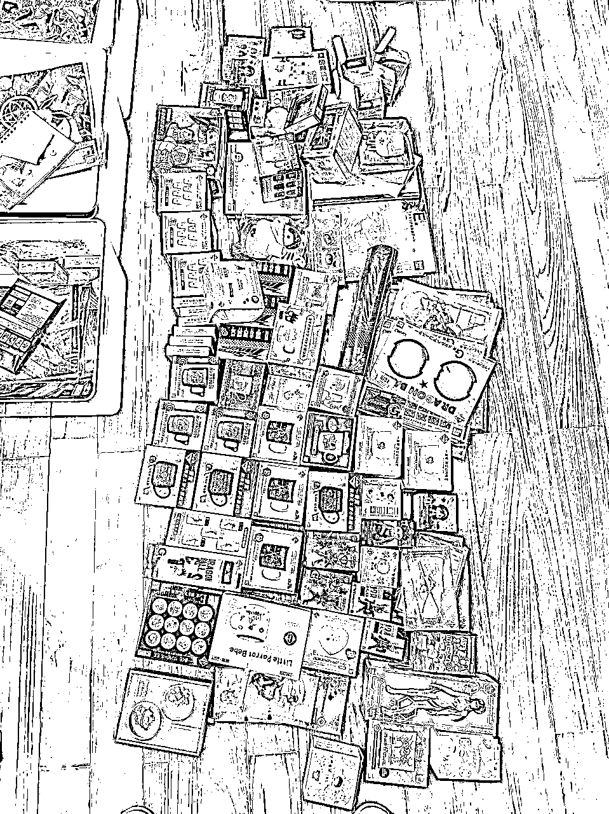
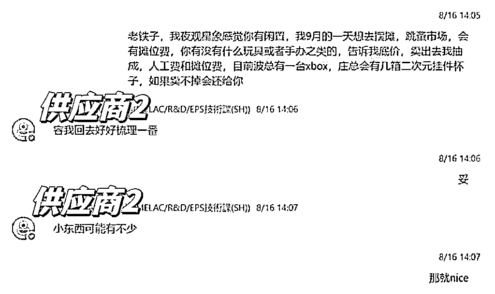
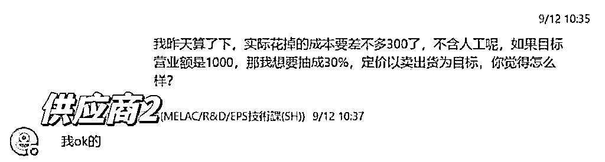
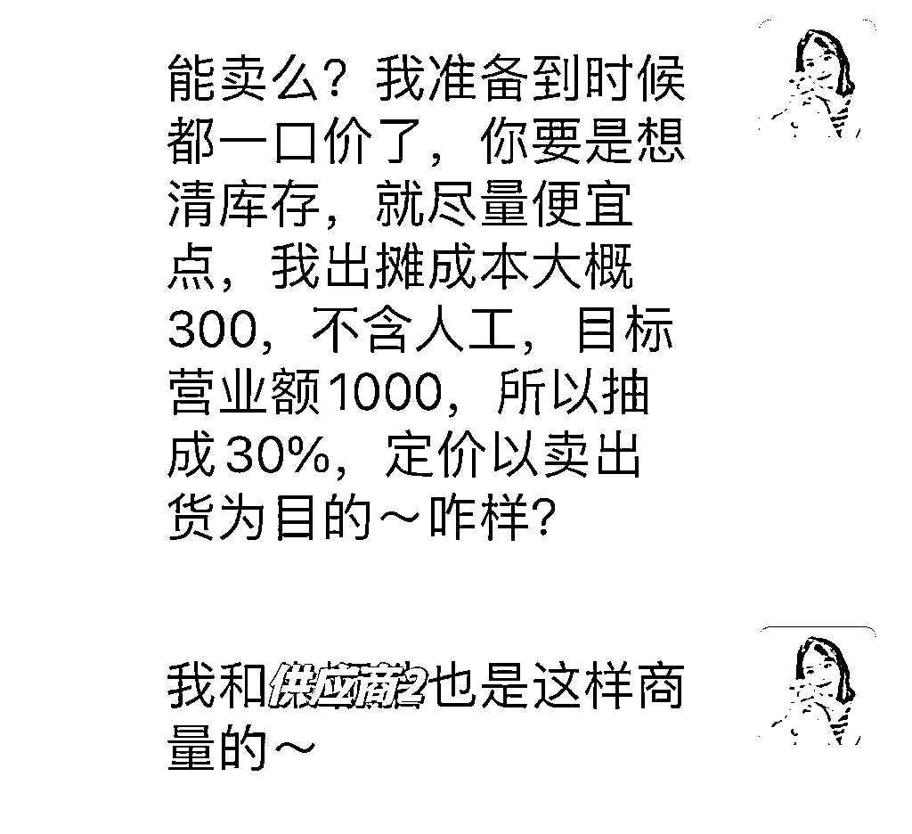
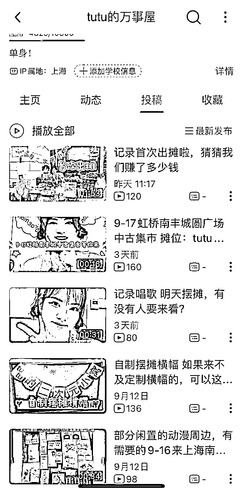
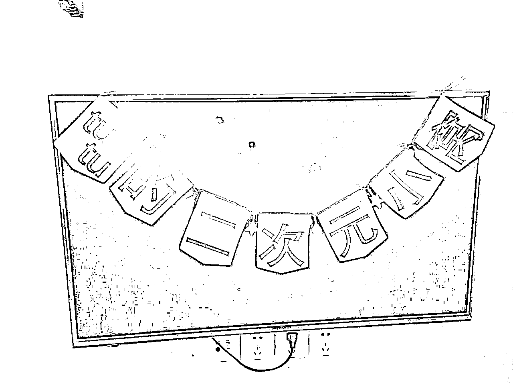
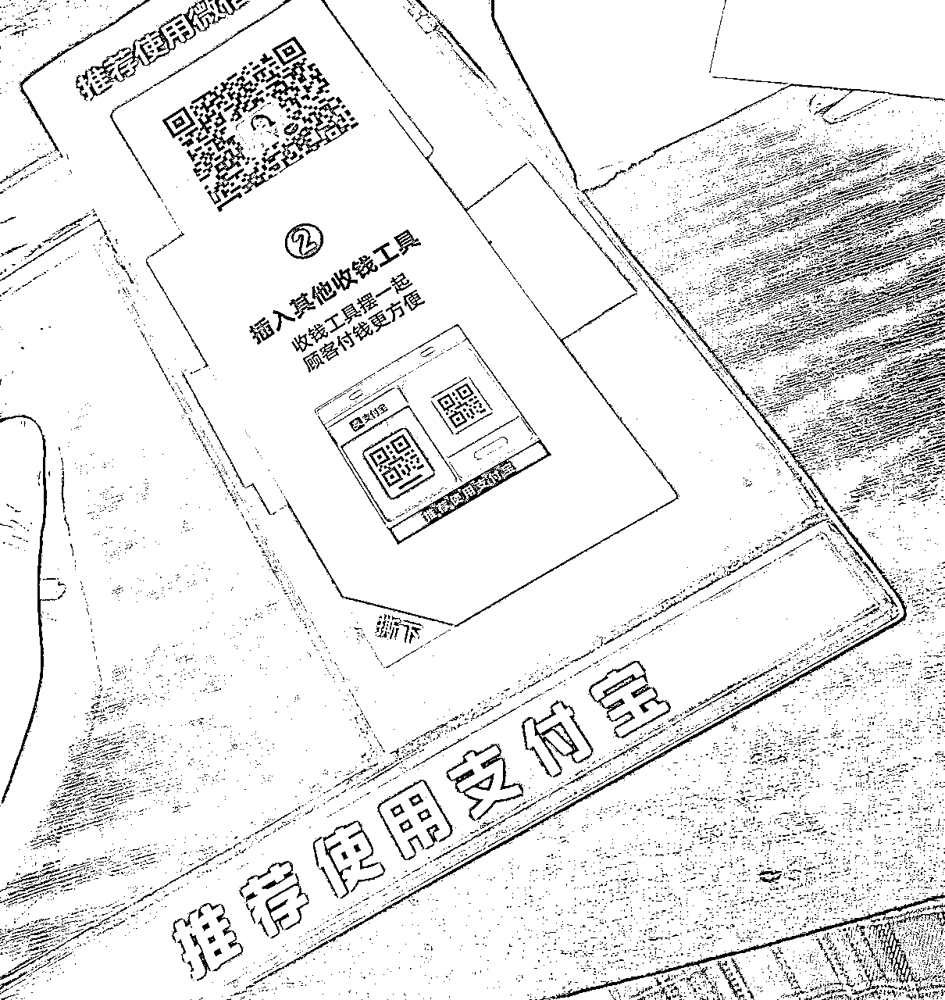

来源：https://cwtgtn5fe5d.feishu.cn/docx/Wnpud1TNsos2kNxMDoIcIAT7nOh

上周日，我在上海南丰城第一次摆摊，日式跳蚤市场营业额600+，被同行询问是不是专业选手，根据营业额和同行的反馈，我觉得我肯定做对了些什么，分享给大家，给大家灵感，如果有做的不好的，也希望有热心圈友指出，听劝！
===分割===
【选品】切合主题是个must，讲求一个“氛围感”，顺势而为，就很容易出单，比如我这次参加的主题是日式的跳蚤集市，就切合闲置品、日式、这两个主要关键词搜集商品，然后整合身边的资源，我的脑洞：二次元、搜刮同事
所以后来的操作就是和我喜欢二次元的富二代同事商量，把他的闲置包圆了，各种周边，有手办、杯子、挂件、盲盒等。



【定价和成本】
我对二次元产品不太懂，所以由我的同事定价，基本参考闲鱼里的价格，这样比较合理容易成交，谈分成的时候，没啥技巧，全是感情，因为同事们都不在意啥成本，能卖出去都是赚的，所以挺支持我的，但是如果一定要说有啥技巧的话，那就先找到最容易合作的那个"供应商"，和他把价格比例敲定，然后再拿着和他商量好的结果去找其他的人谈。


【线上引流】这一点我做的很差，有些没方向，而且我本身不属于二次元圈子，凭直觉去B站发了一些相关的内容，另外我自己也参加了一些日语角的线下活动，有几个微信群，还有闲置物品交换群，和群主打好招呼之后就转发了我在B站上的引流视频，结果来现场买东西的没有，但倒是多了几个加我好友的男生（捂脸）。引流是我需要进一步学习的内容，圈友里的大神，求指教！

【摆摊布置】
所有产品上贴好价格，有些小东西为了引流可以定低价（5元一口价，一箩筐）
小摊的招牌是我自己做的（pdd买的5块的灯串+打印纸）

货架是捡来的（小区杂物区找到的，稍微坏了点，轧带一绑很完美）
搬运用的小车是和小区里的多多买菜店主借的
支付码在支付宝里有免费的支付码套装，包邮到家

包装袋根据产品大小，在pdd上买了两种size的，事实证明，非常合适。
以上内容在我的b站：tutu的万事屋，都可以看到。
如果有喜欢二次元周边的圈友，愿意支持的，也可以来海鲜市场，b站同名。
【线下营销】
这点又要cue到高翔老师（我不单单是想捆绑高老师，高老师非常宝藏需要被更多生财的伙伴熟知才行!），高老师在线下分享会时和我说，如果，去打官司需要选择一位女性律师，你会选那个黑丝高跟的，还是那个包裹的一丝不苟的？答案是选黑丝高跟的那位，理由大家应该都懂。
我出摊当天化了比较夸张的妆，戴上猫耳朵，穿上洛丽塔风小裙子，一点黑丝点缀，我也和帮我忙的同事说好，也类似的装扮，两个人的视觉冲击肯定大于一个人。我们旁边摊位是一对小夫妻，卖的东西和我们差不多，明显我的摊位客户多，成交量大，我甚至会向我的客户推荐小夫妻的产品，提供包装袋，小夫妻也很大方在我的摊位上买了东西。
担心顾客对价格有疑惑，我写了一张纸，告诉大家每个产品都有标价，放心购买。
把相对大众化的产品放在最显眼的地方，用来吸引顾客，有好几个客户是被皮卡丘的卡包吸引的，但是询价之后觉得偏贵，就选择了其他东西，也成交了。
【线上直播】
高翔老师（梅开二度）建议我摆摊直播，我没有直播经验，平时也不看直播，当天在微信上实名认证，然后直播了6小时，一开始操作比肩“活力28”的大爷们，手机发烫导致黑屏三次，不过观看人数800+，其中也有圈友们，开心的不行。关于直播，也会进一步向厉害的圈友学习。
自我复盘：
【选品】二次元产品并非最好的选择，是面向特定人群的，以附近摊位为例，那个日本家庭全部的产品都卖出了，产品有宠物用品、茶器、健身用品等，价格便宜，比如自动猫砂盆，正价几百上千，他们成交的价格是250。关键是日常又便宜。
【布置】一开始桌面杂乱，没啥重点，成交量低，后来尽量把大众接受度高的产品（比如皮卡丘）放在显眼的位置，其他产品也尽量展示出来，成交量逐渐增加。
【销售】好的布置和明码标价让客户愿意驻足我的小摊，根据客户挑选的情况，再给对方推荐合适的产品，一个客户想买假面骑士的手办，我们又推荐了假面骑士的杯子，就被一起打包买走了。
【直播】圈友和我说有直播伴侣，手机撒热器，pdd20+解决问题。
感觉可以更好，但是，一切事情，身体先行，想再多都无益，干就完了。共勉~